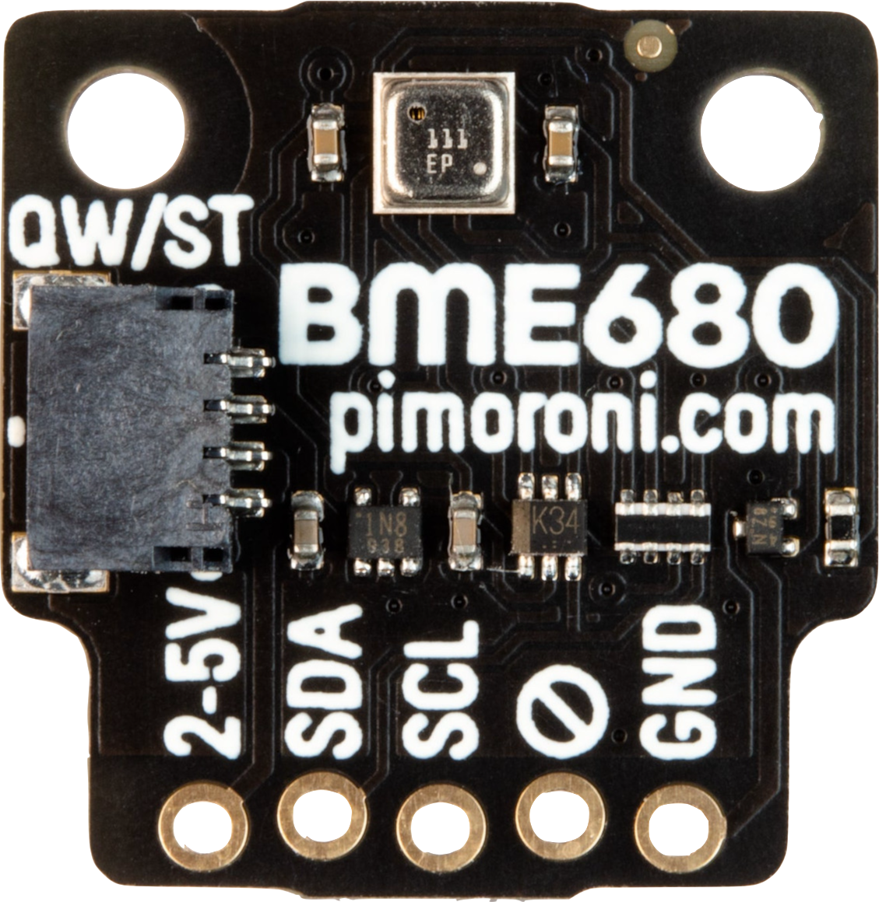

Tools and Dependancies
BME680
The BME680 is the center of the project. It is a 4-in-1 sensor that measures temperature, humidity, pressure, and gas. We use the values read by the sensor to uniquely identify the scents.
The BME680 is the center of the project. It is a 4-in-1 sensor that measures temperature, humidity, pressure, and gas. We use the values read by the sensor to uniquely identify the scents.

Olfactometer
OWidgets' olfactometer is a custom-built device that is used to deliver the scents to the user. Providing short-duration scent stimuli, each of its 6 channels can be electronically activated - carrying a range of scents through an easily cleanable and replaceable cartridge.
OWidgets' olfactometer is a custom-built device that is used to deliver the scents to the user. Providing short-duration scent stimuli, each of its 6 channels can be electronically activated - carrying a range of scents through an easily cleanable and replaceable cartridge.

Raspberry PI
The Raspberry PI microcontroller is used to control everything in the system, from the Olfactometer to the BME680 sensor, and also to run the web server which hosts the interface to access the system.
The Raspberry PI microcontroller is used to control everything in the system, from the Olfactometer to the BME680 sensor, and also to run the web server which hosts the interface to access the system.

Python
Python is the main programming language used in the project. It is used to control the hardware and to run the web server, on the raspberry pi.
Python is the main programming language used in the project. It is used to control the hardware and to run the web server, on the raspberry pi.

Flask
Flask is a micro web framework written in Python. It is used to host the web server that provides the interface to access the system.
Flask is a micro web framework written in Python. It is used to host the web server that provides the interface to access the system.

TsFresh
TsFresh is a python library that is used to extract features from time series data. We use it to extract features from the sensor data.
TsFresh is a python library that is used to extract features from time series data. We use it to extract features from the sensor data.